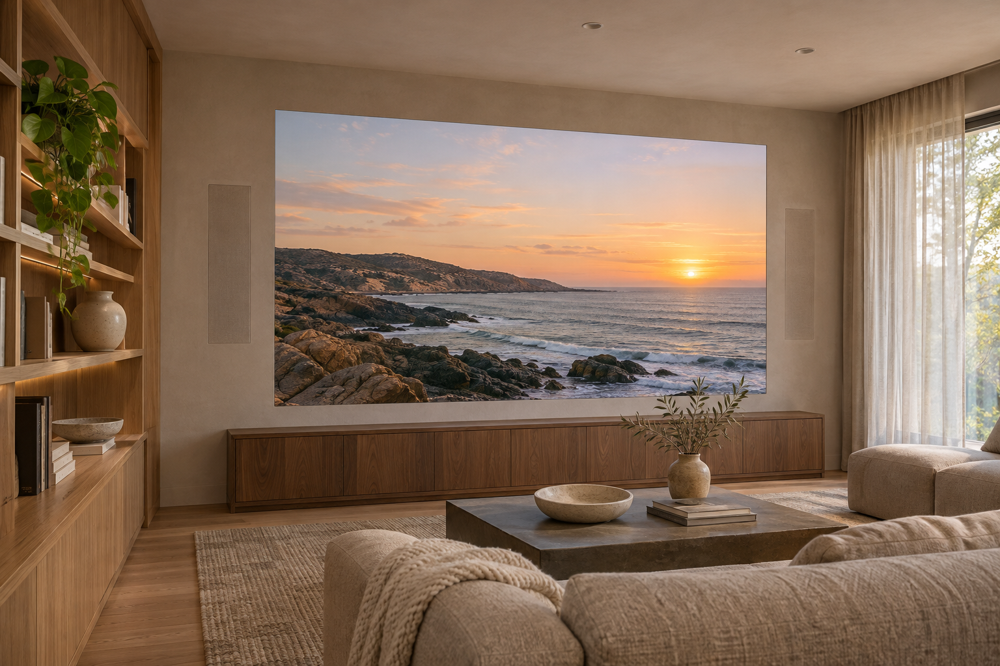
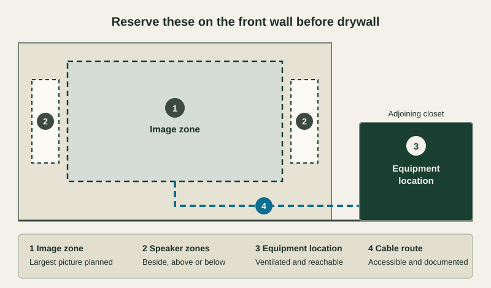

A MicroLED wall can be planned before the display itself is chosen, and the framing stage is the best time to do it. Before the walls close, reserve five things: the wall and the largest picture the room should hold, the speaker zones around it, a ventilated equipment location, an accessible cable route between them, and a record of everything inside the walls. The exact recess, wall support, circuits and cooling depend on the wall your dealer selects. Leave those details open until the selection is made, and keep the room ready to receive them.
A wall chosen now compared with a wall planned for later
Some homes select the wall before drywall, and others only reserve the room for one. The second path is common and works well as long as the right things are protected now.
| Factor | Wall chosen before drywall | Wall planned for later |
|---|---|---|
| Wall and size | Set by the selected wall | Wall reserved for the largest picture planned |
| Recess | Framed to the selected wall’s drawings | Left open until a wall is selected |
| Wall support | Designed for the selected wall | Decided with the structural engineer later |
| Power | Circuits sized for the selected wall | A route from the panel reserved now |
| Cooling | Heat load worked out from the selected wall | Equipment location and air path reserved now |
| Speakers | Placed around the final picture | Zones reserved beside, above or below |
| Cable route | Pulled to the selected equipment | Accessible route installed and documented |
| Records | Drawings for the installed wall | Photos and dimensions of the open walls |
What to reserve before the walls close

The wall and the image zone. Choose the wall with your designer, based on where the seating will be and how the room is used. Our guide to sightlines and seating distance helps size the picture, and our home theater wall guide shows how the wall shapes the room. Mark the largest picture the room should hold on the drawings, and keep switches, outlets, registers and plumbing out of that zone.
Speaker zones. Speakers sit beside, above or below a MicroLED wall, so their locations belong on the drawings now. Our guide to audio and center channel planning explains the options.
An equipment location. The wall’s processors and your sources need a ventilated space that stays reachable after finishes, such as an adjoining closet or a dedicated cabinet.
An accessible cable route. Plan a continuous route from the display wall to the equipment location and to the electrical panel, with access at each end. CEDIA’s smart home wiring guide recommends conduit and documented cable paths so later upgrades can be made without opening finished walls.
What has to wait for the selected wall
The recess depth, the support frame, the circuits, the cooling capacity and the finish detail around the edge of the picture all follow from the wall size, pixel pitch and configuration your dealer selects. Building any of them to a guess risks rebuilding them once the selected wall’s drawings arrive. Our guide to MicroLED room cooling explains how the heat load is worked out once the wall is known.
We engineered our cabinets for front access, so modules come off the room side of the wall and nothing has to be reached from behind it. The wall still needs a support frame and a finished edge, and both are drawn for the selected configuration. Our MicroLED maintenance guide covers service and spares over the life of the wall.
What the builder should document before drywall
A clear record lets your dealer plan the wall later without opening finished surfaces. Ask the builder for:
- A dimensioned elevation of the display wall showing studs, headers, blocking and every box or penetration
- The cable route from the display wall to the equipment location and the panel, with each access point marked
- Photographs of every open wall cavity on the display wall, with a tape measure in the frame
- The electrical panel location and any capacity set aside for the wall, confirmed by the electrician
Keep copies with the homeowner and send a set to your dealer.
What your dealer decides, and who answers the rest
Your authorized dealer leads the display plan and works with the rest of the project team.
- Your dealer: wall size, pixel pitch, the recess and support frame drawings, the equipment list and the service plan
- Architect or interior designer: where the wall sits in the room and how the finishes meet its edge
- Structural engineer: how the wall is supported and how the frame attaches
- Electrician: circuits and panel capacity
- Mechanical engineer: cooling for the room and the equipment location
- Acoustic designer: speaker placement and sound isolation
Our condo and penthouse planning guide covers the building approvals and delivery route a high-rise adds.
Bring this to the first meeting
- Floor plans and an elevation of the display wall
- The largest picture you want the room to hold and where the seating will be
- Your preferred equipment location
- The builder’s framing and drywall schedule
- Photographs of the open walls if framing has already started
Plan your wall with an authorized dealer before the walls close
Bring your plans and the builder’s schedule to an authorized Opal dealer. They can show you a MicroLED wall at full size and set out what to reserve now and what to settle once your wall is selected.
Find a Dealer Before Your Walls Close